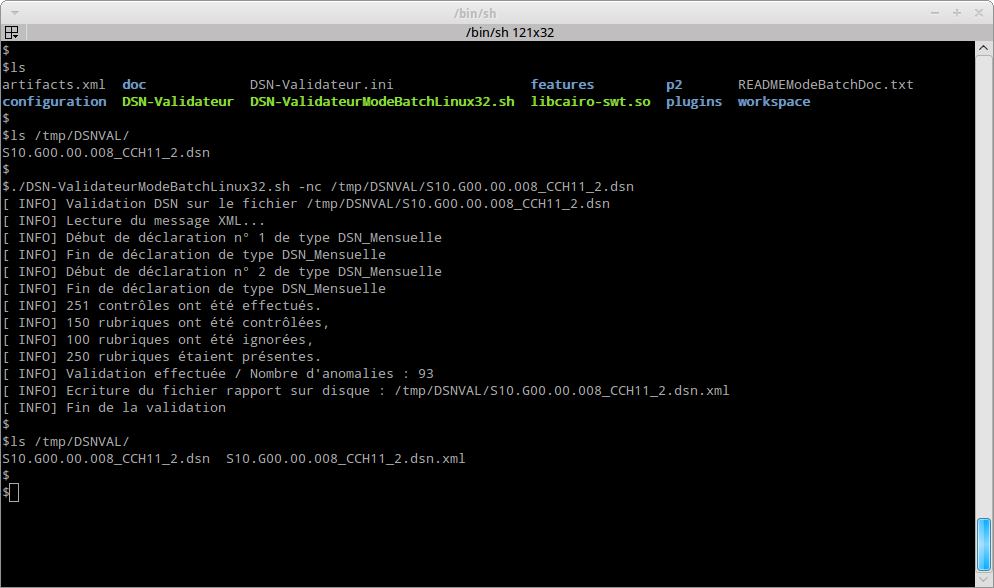
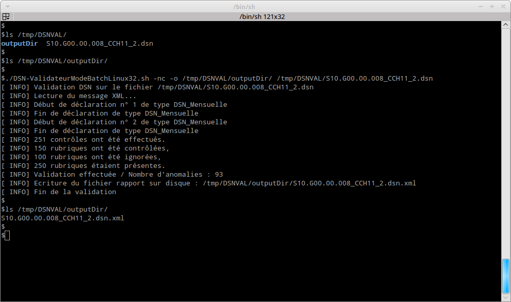

Pour pouvoir utiliser l’application en mode ligne de commande, il faut :
La machine sur laquelle est exécutée la validation en mode ligne de commande n’a pas besoin de serveur graphique.
Le plugin «fr.cnav.autocontrole.headless» permet de valider un message DSN en mode ligne de commande. Ce plugin est intégré à l’exécutable DSN-Val. Pour exécuter la validation, il faut se mettre dans le répertoire d’installation de l’exécutable DSN-Val (ce répertoire doit contenir entre autre le fichier Autocontrol-Validateur.exe et les répertoires plugins et features) et ensuite lancer la commande suivante :
Pour Windows :
Autocontrol-ValidateurModeBatchWin32.cmd [{--help|-h}]
Autocontrol-ValidateurModeBatchWin32.cmd
[{--output|-o} cheminDuRepertoireCible] [--grouping|-g] [{--limit|-l} nbreAnomalieLimite]
[{--noCheckUpdate|-nc} {--inputFileTypeXML|-xml}]cheminDuMessageDsn.dns
Autocontrol-ValidateurModeBatchWin32.cmd [{--doUpdate|-du}]
Pour linux :
./Autocontrol-ValidateurModeBatchLinux32.sh [{--help|-h}]
./Autocontrol-ValidateurModeBatchLinux32.sh
[{--output|-o} cheminDuRepertoireCible] [{--grouping|-g}] [{--limit|-l} nbreAnomalieLimite]
[{--noCheckUpdate|-nc} {--inputFileTypeXML|-xml}]cheminDuMessageDsn.dns
./Autocontrol-ValidateurModeBatchLinux32.sh [{--doUpdate|-du}]
Pour windows avec architecture 64 bits :
Pour linux avec architecture 64 bits :
Voici la description des paramètres de lancement :
Voici une copie d'écran de l’utilisation sur une machine linux sans utilisation du paramètre output :

Voici une copie d'écran de l’utilisation sur une machine linux avec utilisation du paramètre output :

| Nom | Message | Code |
|---|---|---|
| EC_NO_ERROR | No error | 0 |
| EC_NO_INPUT_FILE | Vous devez fournir un message en paramètre. | 1 |
| EC_INPUT_FILE_NOT_EXIST | Le fichier ‹%s› n’existe pas. | 2 |
| EC_INVALID_OUTPUT_TYPE | Le format d'écriture ‹%s› du rapport n’est pas supporté." | 3 |
| EC_INVALID_LIMIT_ANOMALIE | La limite du nombre d’anomalies passée en paramètre ‹%s› n’est pas valide (doit être un entier). | 4 |
| EC_INVALID_OPTION | Option invalide. | 5 |
| EC_INVALID_FACTORIZATION_THRESHOLD | Le seuil de factorisation des anomales ‹%s› n’est pas valide (doit être un entier). | 6 |
| EC_OUTPUT_DIR_PARMETER_NOT_EXIST | Le répertoire ‹%s› passé en paramètre doit exister. | 7 |
| EC_OUTPUT_PARMETER_IS_NOT_DIR | La ressource ‹%s› passée en paramètre doit être un répertoire. | 8 |
| EC_MUST_UPDATE_PRODUCT | Le produit doit être mis à jour pour réaliser une validation conforme à la version actuelle de la norme. La validation peut être réalisée sans faire la mise à jour en utilisant l’option –nc pour -noCheckUpdate. Vous pouvez faire la mise à jour en ligne de commande en utilisant l’option -du ou --doUpdate | 9 |
| EC_UPDATESITE_NOT_AVAILABLE | L’update site ‹%s› est inaccessible ou n’est pas un updatesite valide. La vérification du besoin de mise à jour du produit ne peut pas être faite. La validation peut être réalisée malgré ceci en utilisant l’option –nc ou --noCheckUpdate. | 10 |
| EC_EMPTY_UPDATESITE | L’update site n’est pas configuré, il peut être indiqué dans le fichier de configuration Autocontrol-Validateur.ini. La vérification du besoin de mise à jour du produit ne peut pas être faite. La validation peut être réalisée malgré ceci en utilisant l’option –nc ou --noCheckUpdate. | 11 |
| EC_NEED_HELP | Vous avez besoin d’aide. | 12 |
| EC_INCORRECT_URI_UPDATESITE | L’update site ‹%s› indiqué dans le fichier de configuration Autocontrol-Validateur.ini n’est pas valide. Ce paramètre doit avoir une forme d’url (http://monUpdateSite.fr, https://monUpdateSite.fr, file://monUpdateSitePath) | 13 |
| EC_TECHNICAL_ERROR | Une erreur technique inconnue s’est produite lors de la validation. | 14 |
| EC_UPDATE_PRODUCT_DONE | Le produit est mise à jour. | 15 |
| EC_UPDATE_PRODUCT_FAILED | La mise à jour du produit a échouée avec l’erreur %s | 16 |
| EC_PRODUCT_ALREADY_UP_TO_DATE | Le produit est déjà à jour. | 17 |
| EC_MSG_INTEGRITY_TEST_FAILED | Le fichier à valider (%s) ne semble pas correspondre au type de fichier attendu par la norme %s. La validation est donc interrompue. | 18 |
| CANNOT_CREATE_PRJ | La création du projet %s a échoué (%s). | 21 |
| CANNOT_PERPARE_PRJ | La préparation du projet %s à échoué (%s). | 22 |
| CANNOT_REFRESH_FOLDER | Le rafraîchissement des répertoires de validation a échoué. | 23 |
| CANNOT_PROCESS_SYNTACTIC_VALIDATION | La validation syntaxique a échoué. | 24 |
| CANNOT_PROCESS_SEMAMTIC_VALIDATION | La validation sémantique a échoué. | 25 |
| CANNOT_LOAD_FILE | Le chargement du fichier ‹%s› a échoué. | 26 |
| CANNOT_CLOSE_FILE | La fermeture du fichier ‹%s› a échoué. | 27 |
| CANNOT_CREATE_NORME_DESCRIPTOR | La création du norme descripteur a échouée : %s | 28 |
| CANNOT_EXPORT_XML | L’export XML a échoué. | 30 |
| CANNOT_EXPORT_CURRENT_REPORT | L’exportation du rapport du message courant dans le rapport ‹%s› dans le répertoire conteneur %s a échoué. Vérifier la validité du répertoire. | 31 |
| ERROR_UNSUPPORTED_EXPORT | L’exportation ‹%s› n’est pas supportée. | 32 |
| ERROR_PATH_NOT_FILE | Le chemin ‹%s› ne correspond pas à un fichier | 33 |
| ERROR_REPORT_CREATION | La création du rapport de %s a échoué ( %s ). | 34 |
| ERROR_PROCESS_CONVERTION | La conversion a échoué. | 35 |
| ERROR_PROCESS_CONVERTION_FORMAT_NORME | La validation a été interrompue. Le fichier d’entrée ‹%s› n’est pas un message de la norme. | 36 |
| ERROR_VALIDATE_SEMANTIC | La validation sémantique a échoué (%s). | 37 |
| ERROR_MERGE_REPORTS | La fusion des rapports a échoué (%s). | 38 |
| ERROR_FORMATER_INI_CANNOT_ADD_VALUE | L’ajout de la valeur %s est impossible. Le nombre de valeur ne doit pas être plus grand que le nombre de titre %d. | 39 |
| ERROR_FORMATER_INI_NOT_EQUAL_LIST_SIZE | L’initialisation de formateur n’est pas correcte. Le nombre de %s %d et de %s %d est diffrent | 40 |
| ERROR_FORMATER_INI_NOT_PREPARE_METHOD_EXECUTED | L’initialisation du formateur n’est pas correcte. La méthode prepareValueLineSeparator n’a pas été invoquée | 41 |
| ERROR_ZIP_FILE_ACCESS | L’accès au fichier zip ‹%s› a échoué (%s). | 42 |
| CANNOT_CLOSE_ZIP_FILE | La fermeture du fichier Zip précédent ‹%s› a échoué. (%s). | 43 |
| ERROR_EXTRACT_SALARIE_MSG_LIST | L’extraction des salariés du message a échoué (%s). | 44 |
| ERROR_EXPORT_IMPORT_TEMPLATE | Le template n’a pas pu être importé, le projet (%s) est introuvable. | 45 |
| ERROR_PROCESS_ALL_IN_ONE | Le processus de conversion-validation a échoué (%s). | 47 |
| ERROR_SERIALISATION_REPORT_HEADLESS | Le fichier de destination ‹%s› n’a pu être sérialisé à partir du fichier temporaire ‹%s› qui a été généré par la validation | 49 |
| ERROR_TECHNIC_VALIDATION | Une erreur technique s’est produite lors de la validation. Veuillez regarder la vue erreur log pour plus de détails | 50 |
| ERROR_TECHNIC_EXPORT | Une erreur technique s’est produite lors de l’export. Veuillez regarder la vue erreur log pour plus de détails. | 51 |
| ERROR_OPENING_ERROR_LOG | Une erreur technique s’est produite lors de l’ouverture de la vue error log. | 52 |
| ERROR_INDIVIDUAL_VIEW_INITIALIZATION | Une erreur technique s’est produite lors de l’ouverture de la vue salarié. | 53 |
| ERROR_INDIVIDUAL_VIEW_REFRESH | Une erreur technique s’est produite lors du rafraîchissement de la vue salarié | 54 |
| ERROR_NORME_VIEW_REFRESH | Une erreur technique s’est produite lors du rafraîchissement de la vue norme. | 55 |
| ERROR_NORME_VIEW_INITIALIZATION | Une erreur technique s’est produite lors de l’ouverture de la vue norme. | 56 |
| ERROR_PRINCIPAL_VIEW_REFRESH | Une erreur technique s’est produite lors du rafraîchissement de la vue principale. | 57 |
| ERROR_PRINCIPALVIEW_INITIALIZATION | Une erreur technique s’est produite lors de l’ouverture de la vue principale. | 58 |
| ERROR_NO_VALUE_FOR_INDIVIDUAL_FIELD | Impossible de trouver de rubrique correspondante à celle fournie (%s) dans le message, pour l’affichage du champ individu %s | 59 |
| ERROR_CANNOT_RETRIEVE_BUNDLE | Le bundle de la norme ‹%s› n’a pu être r\u00E9cup\u00E9rer | 60 |
| CANNOT_SELECT_GIVEN_NORM | La norme dont l’identifiant est ‹%s› ne correspond à aucune norme installée. La liste des normes installées est la suivante | 61 |
| ERROR_NO_NORMS_REGISTERED | Il n’y a aucune norme installée dans le produit. | 62 |
| ERROR_INTEGRITY_CHECKING | Une erreur s’est produite lors de la tentative de détermination de la validité du fichier fournit pour la validation. | 63 |
| ERROR_CANNOT_INSTANCIATE_DESCRIPTOR | La création du norme descripteur de la norme ‹%s› a échouée. | 70 |
| ERROR_CLASS_INSTANCIATED_IS_NOT_DESCRIPTOR | Le type fourni par la norme %s qui permet de créer un descripteur de norme ne correspond pas à un type attendu. | 71 |
| ERROR_CANNOT_INSTANCIATE_SERIALIZER | La création du sérialiseur de la norme ‹%s› a échoué | 72 |
| ERROR_CLASS_INSTANCIATED_IS_NOT_SERIALIZER | Le type fourni par la norme %s qui permet de créer un sérialiseur ne correspond pas à un type attendu. | 74 |
| EC_JAVA_VERSION | La version de java utilise (‹%s›) n’est pas bonne. Vous devez utiliser une version 1.6 – 32 bits (configurer la variable DSNVAL_JAVA). | 99 |
| EC_JAVA_ARCHI | La version de java est une version 64 bits. Vous devez utiliser une version 1.6 – 32 bits (configurez la variable DSNVAL_JAVA). | 98 |
| EC_JAVA_ARCHI_64 | La version de java est une version 32 bits. Vous devez utiliser une version 64 bits (configurez la variable DSNVAL_JAVA). | 97 |
Le code retour de la commande peut être récupérer dans la variable ? ( echo $? ) dans un shell bash sous linux et la variable errorlevel sous windows ( echo %errorlevel% ).
Par défaut, les scripts de lancement prennent l’exécutable java qui est défini dans le path du système. Si ce java n’est pas compatible avec le produit (Java 1.6 en version 32 ou 64-Bit) un message nous indiquera que la version utilisée n’est pas valide.
Nous pouvons configurer la version utilisé en valorisant la variable DSNVAL_JAVA avec le chemin de l’exécutable java voulu. Voici les commandes de configuration :
Pour Windows :
set DSNVAL_JAVA="c:\path\to\java.exe"
Pour Linux :
export DSNVAL_JAVA=/path/to/java
Pour que les accents soient correctement restitués sous windows, deux actions doivent être réalisées :
Le comportement de la validation avec la validation headless d’autocontrole peut être paramétrée via le fichier «Autocontrol-Validateur.ini». Pour chaque paramètre que l’on veut spécifier, il faut ajouter sa ligne à la fin du fichier «ini». La liste des paramètres est la suivante :
| Nom du paramètre | Valeur par défaut | Valeurs autorisées | Description |
|---|---|---|---|
| -Dfr.cnav.norme.report.mutualisation.threshold | Pas de mutualisation | entier n > 0 | Propriété permettant de fixer le seuil à partir duquel les anomalies sont factorisées par le validateur. Si la définition de la propriété est absente la factorisation est inactive. Si la définition de la propriété est présente et contient un entier positif n alors les anomalies identiques ne seront présentes qu’au nombre de n dans chaque déclaration. |
| -Dmaximal.number.errors | Illimité | entier n > 0 | Propriété fournissant le nombre d’anomalies au-delà duquel les anomalies sont factorisées en une seule anomalie. Une valeur de 0, une valeur négative ou l’absence de la propriété correspondent à l’absence de limite. |
| -DconvertedFiles.root.path | none | String | chemin vers la racine du répertoire où sont produits les fichiers xml après conversion |
| -Dfr.cnav.norme.val.originalValue | datenum | «date», "datenum" | Propriété indiquant si on doit utiliser l’attribut XML originalValue sur les rubriques générées lors de la conversion. |
| -Dstop.on.syntactic.error | false | «true», "false" | Si la propriété est renseignée à la valeur « true » alors la validation est interrompue après la validation syntaxique en cas d’anomalies syntaxiques. |
| -Dstop.on.conversion.error | false | «true», "false" | Si la propriété est renseignée à la valeur « true » alors la validation est interrompue après la conversion en cas d’anomalies lors de la conversion. |
| -Dfr.cnav.norme.val.anomaliesInhibiting | true | «true», "false" | Lorsque cette propriété est à « true », les anomalies sémantiques secondaires générées à cause d’une autre anomalie primaire sont filtrées du rapport de validation |